Your weekly dose of motivation — storytelling, philosophy, and perspective shifts that land in your feed before the weekend does. Past Edition 300 and still showing up every single Friday.

It started in 2018 as a way to connect with a new team — one email, every Friday, no exceptions. It never stopped. Each edition connects disparate things, and somehow, every week, the threads meet in the middle.
People who entered and left the world this week in history — and what their lives still have to say.
A word that earns its place in your vocabulary — arboreal, vernacular, ephemeral, kismet.
A visual riddle to chew on. The answer is never given away easy — that's the point.
The emotional core — a real story from a real life that makes the whole edition land.
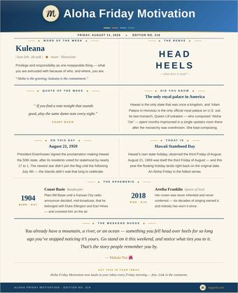
Two Sleeping GiantsHawaii Statehood Day, belonging, and two mountains with the same name. 8/21/2026LATEST · READ → 315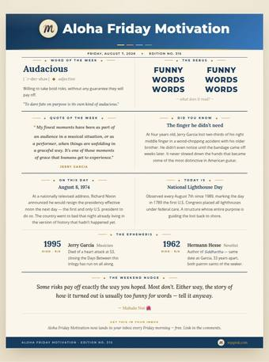
Dupree's Diamond BlondesThe Grateful Dogs finale — daring fate in Alabama. 8/7/2026READ → 314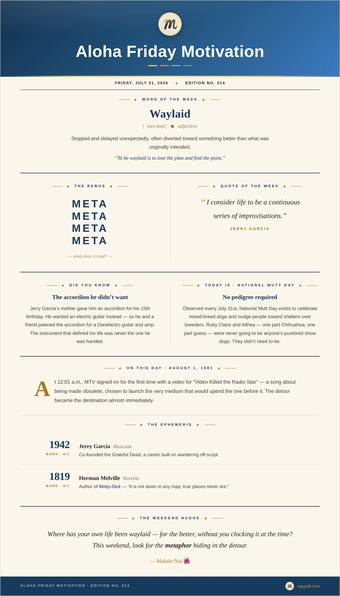
Burgers and DogsGrateful Dogs part two — getting waylaid for the better. 7/31/2026READ → 313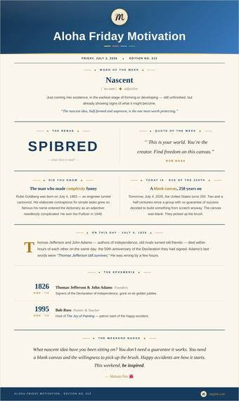
Happy Little AccidentsBlank canvases, happy accidents, and building in public. 7/3/2026READ → 312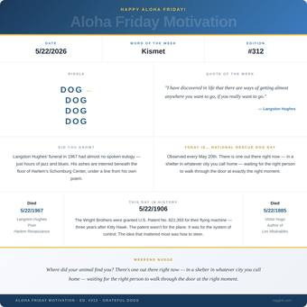
Grateful DogsRescue, kismet, and Kauai — part one of a trilogy. 5/22/2026READ → 311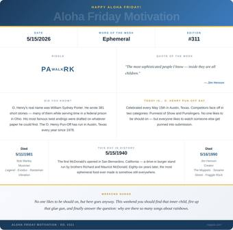
Corrugated Dreams & Other Inflated ExpectationsImpermanence, creativity, and the joy of making things. 5/15/2026READ → 310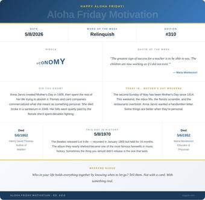
Let It BeRelinquishing control — a Mother's Day meditation. 5/8/2026READ → 309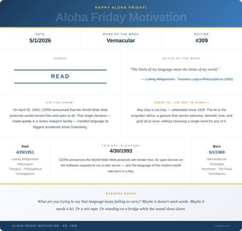
Last NightLanguage, time, and childhood. 5/1/2026READ → 308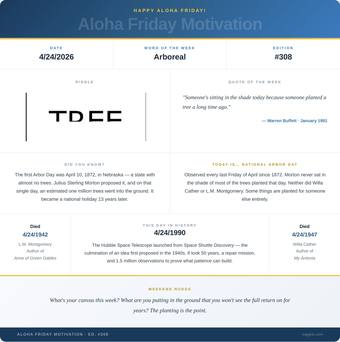
RootedLegacy, and planting things for people you'll never meet. 4/24/2026READ → 307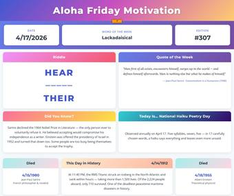
Universal QuestionsSartre, Einstein, and three color songs — technically a Saturday. 4/18/2026READ → 306 Masters EditionWord of the week: Ritual — Kurt Vonnegut, Joseph Pulitzer, and the Titanic setting sail. 4/10/2026READ → 305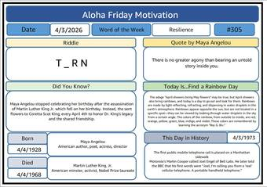
The Lineage of VoiceMaya Angelou, Dr. King — and the day mpgink.com went live. 4/3/2026READ → 304 A Beat Writer, a Jazz Revolutionary, and a Civil Disobedient Walk Into a Bar…Kerouac, Charlie Parker, and Gandhi share March 12. 3/12/2026READ → 303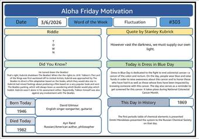
How I Learned to Stop Worrying…EditionWord of the week: Fluctuation — David Gilmour, Ayn Rand, and Kubrick's own light. 3/6/2026READ → 302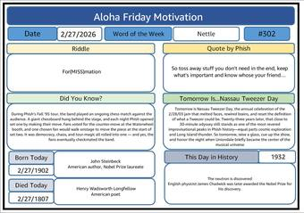
Nassau Tweezer Day ReduxWord of the week: Nettle — Steinbeck, Longfellow, and Nassau Tweezer eve. 2/27/2026READ → 301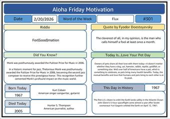
Tilt, Monk, and the Birth of a Jazz WriterWord of the week: Flux — Thelonious Monk's Pulitzer, Kurt Cobain, Hunter S. Thompson. 2/20/2026READ → 300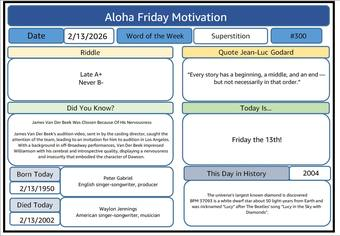
Too Little To FateWord of the week: Superstition — Peter Gabriel, Waylon Jennings, Friday the 13th. 2/13/2026READ → 299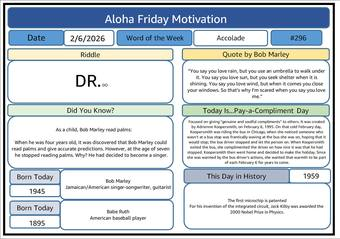
One Love EditionWord of the week: Accolade — Bob Marley reads palms; Babe Ruth. 2/6/2026READ → 298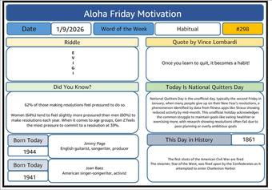
The Ritual of FailureWord of the week: Habitual — Jimmy Page, Joan Baez, National Quitters Day. 1/9/2026READ →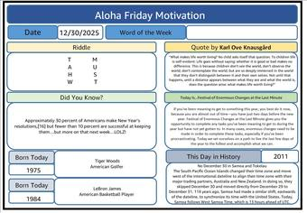
A Farewell to 2025 in 3 ActsTiger Woods, LeBron James, and the Festival of Enormous Changes at the Last Minute. 12/30/2025READ → 296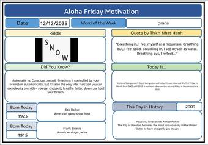
The Intentional BreathWord of the week: prana — Sinatra, Bob Barker, and Thich Nhat Hanh's breath. 12/12/2025READ → 295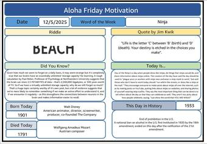
The Island CarnivalWord of the week: Ninja — Walt Disney, Mozart, and the end of Prohibition. 12/5/2025READ → 294 Lessons LearnedWord of the week: neurodivergent — Ken Griffey Jr., Björk, and Maria Montessori. 11/21/2025READ → 293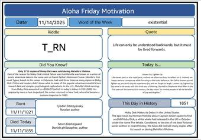
The Pattern that SurroundsWord of the week: existential — Dostoyevsky, Kierkegaard, and Moby-Dick's debut. 11/14/2025READ → 292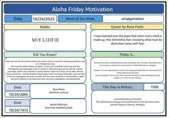
The Last Shorts DayWord of the week: amalgamation — Rosa Parks, Jackie Robinson, and Houdini's last show. 10/24/2025READ → 291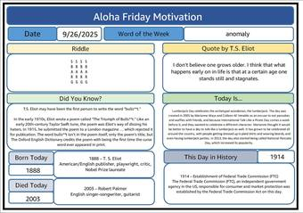
To End is to BeginThe reunion after — Pine Lake, T.S. Eliot, and new beginnings. 9/26/2025READ → 290 Big Chill VibesBack to Pine Lake — dedicating a house to Sandy Huntington. 9/18/2025READ → 289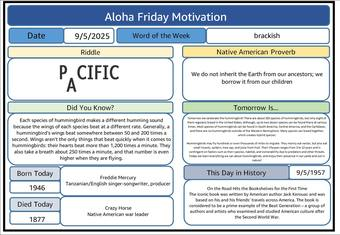
Beat of Your Own Hum EditionWord of the week: brackish — Freddie Mercury, Crazy Horse, and hummingbird hearts. 9/5/2025READ → 288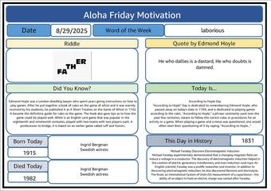
Labor of Love EditionWord of the week: laborious — Ingrid Bergman, born and died on August 29. 8/29/2025READ → 287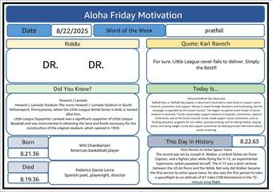
Little League, Big Dreams EditionWord of the week: pratfall — Wilt Chamberlain, García Lorca, and the Little League World Series. 8/22/2025READ → 286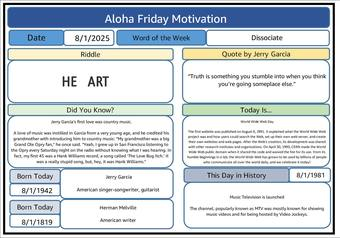
Shameless Plug EditionWord of the week: Dissociate — Jerry Garcia, Herman Melville, World Wide Web Day. 8/1/2025READ → 285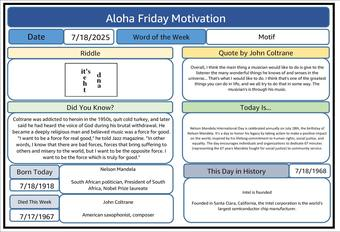
Echoes of DefianceWord of the week: Motif — Mandela Day and John Coltrane's force for good. 7/18/2025READ → 284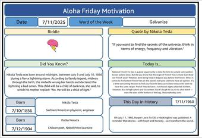
Charged for GreatnessWord of the week: Galvanize — Tesla born in a lightning storm; Pablo Neruda. 7/11/2025READ → 283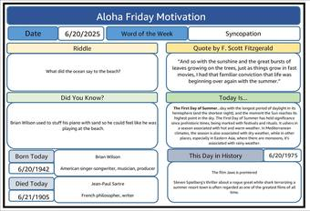
God Only Knows (What Summer Holds)Word of the week: Syncopation — Brian Wilson, Sartre, and the first day of summer. 6/20/2025READ → 282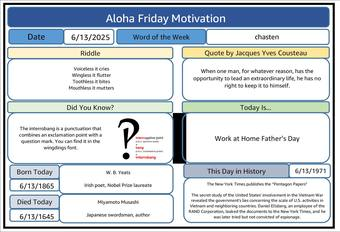
A Sliver of Blue Sky EditionWord of the week: chasten — Yeats, Miyamoto Musashi, and the interrobang. 6/13/2025READ → 281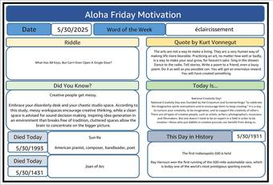
Creativity EditionWord of the week: éclaircissement — Sun Ra, Joan of Arc, and the first Indy 500. 5/30/2025READ → 280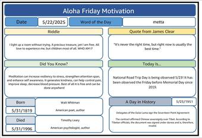
Meditation EditionWord of the day: metta — Walt Whitman, Timothy Leary, and why meditation is free. 5/22/2025READ → 279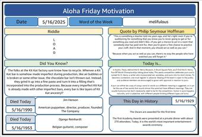
Turn Your Blues Into JazzDjango Reinhardt's two-fingered genius — pun-forward for O. Henry Pun-Off Day. 5/16/2025READ → 278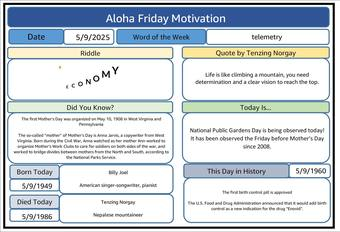
Mother of all Mothers EditionWord of the week: telemetry — Billy Joel, Tenzing Norgay, and Mother's Day's origins. 5/9/2025READ → 277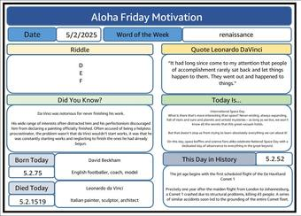
High-Flying with LeoWord of the week: renaissance — Leonardo da Vinci and David Beckham. 5/2/2025READ → 276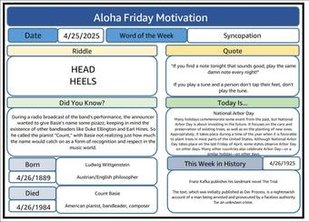
The Count, The Duke and The Earl EditionWord of the week: Syncopation — Count Basie's "same damn note" and Wittgenstein. 4/25/2025READ → 275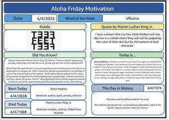
Masters EditionWord of the week: effusive — Maya Angelou born and Dr. King lost, the same April date. 4/4/2025READ → 274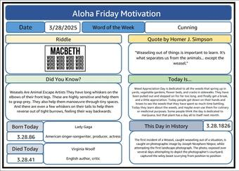
Justice for the WeaselApril Fools edition — a fabricated lawsuit, played straight. Word of the week: Cunning. 3/28/2025READ → 273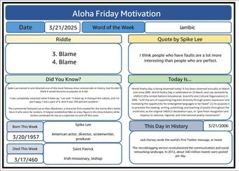
Paddy's Pub EditionWord of the week: iambic — Spike Lee, Saint Patrick, World Poetry Day. 3/21/2025READ → 272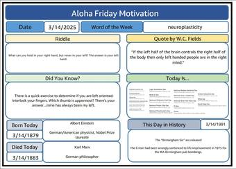
Going LeftyWord of the week: neuroplasticity — Einstein, Karl Marx, and Pi Day. 3/14/2025READ → 271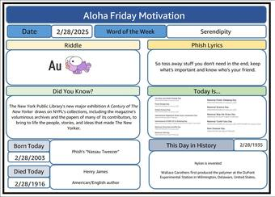
Nassau EditionWord of the week: Serendipity — Phish's Nassau Tweezer turns 22; Henry James. 2/28/2025READ → 270 Voices of FireNina Simone and Malcolm X — two revolutionary voices, one shared defiance. 2/21/2025READ → 269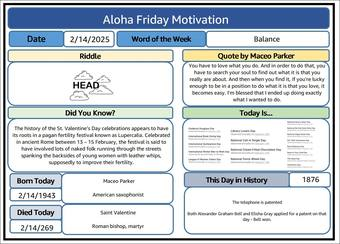
St. Maceo DayWord of the week: Balance — Maceo Parker, Saint Valentine, and the telephone patent. 2/14/2025READ →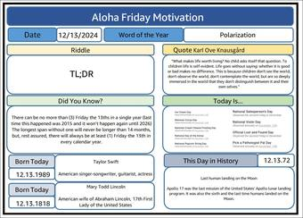
Edition 268Word of the year: Polarization — Taylor Swift, Mary Todd Lincoln, Friday the 13th. 12/13/2024READ → 267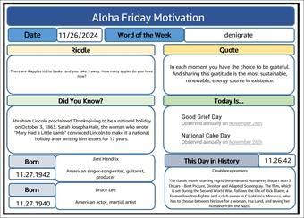
Grateful EditionAn Aloha Tuesday: denigrate — Hendrix, Bruce Lee, and how Thanksgiving became a holiday. 11/26/2024READ → 266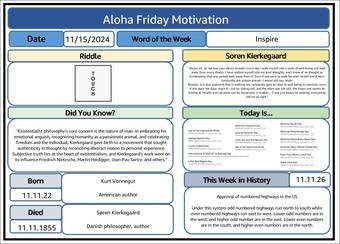
Restart Your MindWord of the week: Inspire — Kurt Vonnegut and Kierkegaard. 11/15/2024READ → 265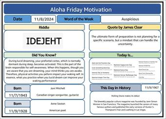
Joni Mitchell EditionWord of the week: Auspicious — Joni Mitchell, Anne Sexton, and lucid dreams. 11/8/2024READ → 264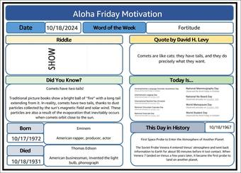
A Comet's TailsWord of the week: Fortitude — Eminem, Thomas Edison, and why comets have two tails. 10/18/2024READ → 263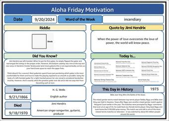
James Marshall Hendrix EditionWord of the week: incendiary — H.G. Wells and Jimi Hendrix. 9/20/2024READ → 262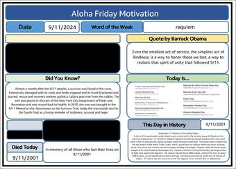
Requiem for 9/11A 9/11 requiem — and the poem first read aloud in Byron Bay. 9/11/2024READ → 261 PerspectiveWord of the week: petulant — Freddie Mercury, Mother Teresa, James Clear. 9/6/2024READ → 260 Labor Day EditionWord of the week: accretive — Warren Buffett's chains of habit; remembering Princess Diana. 8/30/2024READ → 259 Dog Days EditionWord of the week: newfangled — Kobe Bryant, William Wallace, the Dalai Lama. 8/23/2024READ → 258 WALL-E EditionWord of the week: Tchotchke — Steve Martin, Les Paul, Earl Nightingale. 8/16/2024READ → 257 Kokua for Maui — One Year LaterWord of the week: Kuleana — remembering Jerry Garcia and Hermann Hesse; Murakami's storm. 8/9/2024READ → 256 The Days Between EditionWord of the week: mondegreen — Jerry Garcia, Fela Kuti, and Robert Hunter's lyrics. 8/2/2024READ → 255 The Lunar EditionWord of the week: culpable — Degas, Petrarch, and a moonlit Maya Angelou quote. 7/19/2024READ → 254 Simplicity EditionWord of the week: archetypal — Thoreau, Hamilton, and a Sandy Huntington quote. 7/12/2024READ → 253 A "Good" Phishing EmailWord of the week: deference — Kafka, Jim Morrison, and Phish's Baker's Dozen. 7/3/2024READ → 252 Twilight Zone EditionWord of the week: nascent — Rousseau, Rod Serling, and the Twilight Zone. 6/28/2024READ →Before the newsletter moved to LinkedIn it went out as a plain email, and those sends were never numbered the way the LinkedIn run is. These 96 are what survived in the archive, keyed by the date they were sent. 26 of them carry a number the original subject line assigned; the rest never had one, and we haven't invented any. Signature blocks and work links are stripped, and colleagues appear by role.
24 Pistol Pete EditionGrowing up playing basketball, as a scrawny little kid, Pistol Pete Maravich was an inspiration for me. 1/5/2024READ →Join the readers who start their weekend with a little aloha.